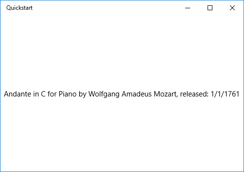
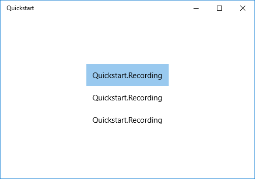
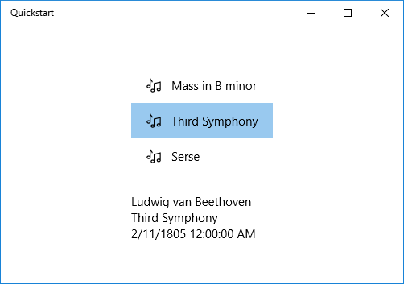
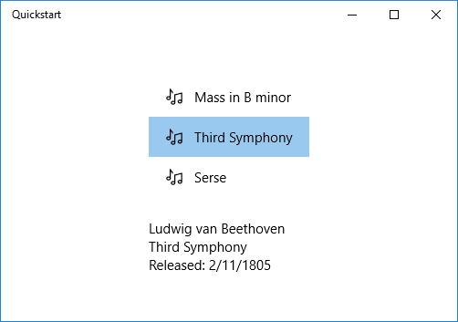

Windows data binding overview
This topic shows you how to bind a control (or other UI element) to a single item or bind an items control to a collection of items in a Windows App SDK app. In addition, we show how to control the rendering of items, implement a details view based on a selection, and convert data for display. For more detailed info, see Data binding in depth.
Prerequisites
This topic assumes that you know how to create a basic Windows App SDK app. For instructions on creating your first Windows App SDK app, see Create your first WinUI 3 (Windows App SDK) project.
Create the project
Create a new Blank App, Packaged (WinUI 3 in Desktop) C# project. Name it "Quickstart".
Binding to a single item
Every binding consists of a binding target and a binding source. Typically, the target is a property of a control or other UI element, and the source is a property of a class instance (a data model, or a view model). This example shows how to bind a control to a single item. The target is the Text property of a TextBlock. The source is an instance of a simple class named Recording that represents an audio recording. Let's look at the class first.
Add a new class to your project, and name the class Recording.
namespace Quickstart
{
public class Recording
{
public string ArtistName { get; set; }
public string CompositionName { get; set; }
public DateTime ReleaseDateTime { get; set; }
public Recording()
{
ArtistName = "Wolfgang Amadeus Mozart";
CompositionName = "Andante in C for Piano";
ReleaseDateTime = new DateTime(1761, 1, 1);
}
public string OneLineSummary
{
get
{
return $"{CompositionName} by {ArtistName}, released: "
+ ReleaseDateTime.ToString("d");
}
}
}
public class RecordingViewModel
{
private Recording defaultRecording = new Recording();
public Recording DefaultRecording { get { return defaultRecording; } }
}
}
Next, expose the binding source class from the class that represents your window of markup. We do that by adding a property of type RecordingViewModel to MainWindow.xaml.cs.
namespace Quickstart
{
public sealed partial class MainWindow : Window
{
public MainWindow()
{
this.InitializeComponent();
ViewModel = new RecordingViewModel();
}
public RecordingViewModel ViewModel{ get; set; }
}
}
The last piece is to bind a TextBlock to the ViewModel.DefaultRecording.OneLineSummary property.
<Window x:Class="Quickstart.MainWindow" ... >
<Grid>
<TextBlock Text="{x:Bind ViewModel.DefaultRecording.OneLineSummary}"
HorizontalAlignment="Center"
VerticalAlignment="Center"/>
</Grid>
</Window>
Here's the result.

Binding to a collection of items
A common scenario is to bind to a collection of business objects. In C#, the generic ObservableCollection<T> class is a good collection choice for data binding, because it implements the INotifyPropertyChanged and INotifyCollectionChanged interfaces. These interfaces provide change notification to bindings when items are added or removed or a property of the list itself changes. If you want your bound controls to update with changes to properties of objects in the collection, the business object should also implement INotifyPropertyChanged. For more info, see Data binding in depth.
This next example binds a ListView to a collection of Recording objects. Let's start by adding the collection to our view model. Just add these new members to the RecordingViewModel class.
public class RecordingViewModel
{
...
private ObservableCollection<Recording> recordings = new ObservableCollection<Recording>();
public ObservableCollection<Recording> Recordings{ get{ return recordings; } }
public RecordingViewModel()
{
recordings.Add(new Recording(){ ArtistName = "Johann Sebastian Bach",
CompositionName = "Mass in B minor", ReleaseDateTime = new DateTime(1748, 7, 8) });
recordings.Add(new Recording(){ ArtistName = "Ludwig van Beethoven",
CompositionName = "Third Symphony", ReleaseDateTime = new DateTime(1805, 2, 11) });
recordings.Add(new Recording(){ ArtistName = "George Frideric Handel",
CompositionName = "Serse", ReleaseDateTime = new DateTime(1737, 12, 3) });
}
}
And then bind a ListView to the ViewModel.Recordings property.
<Window x:Class="Quickstart.MainWindow" ... >
<Grid>
<ListView ItemsSource="{x:Bind ViewModel.Recordings}"
HorizontalAlignment="Center" VerticalAlignment="Center"/>
</Grid>
</Window>
We haven't yet provided a data template for the Recording class, so the best the UI framework can do is to call ToString for each item in the ListView. The default implementation of ToString is to return the type name.

To remedy this, we can either override ToString to return the value of OneLineSummary, or we can provide a data template. The data template option is a more usual solution, and a more flexible one. You specify a data template by using the ContentTemplate property of a content control or the ItemTemplate property of an items control. Here are two ways we could design a data template for Recording together with an illustration of the result.
<ListView ItemsSource="{x:Bind ViewModel.Recordings}"
HorizontalAlignment="Center" VerticalAlignment="Center">
<ListView.ItemTemplate>
<DataTemplate x:DataType="local:Recording">
<TextBlock Text="{x:Bind OneLineSummary}"/>
</DataTemplate>
</ListView.ItemTemplate>
</ListView>
<ListView ItemsSource="{x:Bind ViewModel.Recordings}"
HorizontalAlignment="Center" VerticalAlignment="Center">
<ListView.ItemTemplate>
<DataTemplate x:DataType="local:Recording">
<StackPanel Orientation="Horizontal" Margin="6">
<SymbolIcon Symbol="Audio" Margin="0,0,12,0"/>
<StackPanel>
<TextBlock Text="{x:Bind ArtistName}" FontWeight="Bold"/>
<TextBlock Text="{x:Bind CompositionName}"/>
</StackPanel>
</StackPanel>
</DataTemplate>
</ListView.ItemTemplate>
</ListView>
For more information about XAML syntax, see Create a UI with XAML. For more information about control layout, see Define layouts with XAML.
Adding a details view
You can choose to display all the details of Recording objects in ListView items. But that takes up a lot of space. Instead, you can show just enough data in the item to identify it and then, when the user makes a selection, you can display all the details of the selected item in a separate piece of UI known as the details view. This arrangement is also known as a master/details view, or a list/details view.
There are two ways to go about this. You can bind the details view to the SelectedItem property of the ListView. Or you can use a CollectionViewSource, in which case you bind both the ListView and the details view to the CollectionViewSource (doing so takes care of the currently-selected item for you). Both techniques are shown below, and they both give the same results (shown in the illustration).
Note
So far in this topic we've only used the {x:Bind} markup extension, but both of the techniques we'll show below require the more flexible (but less performant) {Binding} markup extension.
First, here's the SelectedItem technique. For a C# application, the only change necessary is to the markup.
<Window x:Class="Quickstart.MainWindow" ... >
<Grid>
<StackPanel HorizontalAlignment="Center" VerticalAlignment="Center">
<ListView x:Name="recordingsListView" ItemsSource="{x:Bind ViewModel.Recordings}">
<ListView.ItemTemplate>
<DataTemplate x:DataType="local:Recording">
<StackPanel Orientation="Horizontal" Margin="6">
<SymbolIcon Symbol="Audio" Margin="0,0,12,0"/>
<StackPanel>
<TextBlock Text="{x:Bind CompositionName}"/>
</StackPanel>
</StackPanel>
</DataTemplate>
</ListView.ItemTemplate>
</ListView>
<StackPanel DataContext="{Binding SelectedItem, ElementName=recordingsListView}"
Margin="0,24,0,0">
<TextBlock Text="{Binding ArtistName}"/>
<TextBlock Text="{Binding CompositionName}"/>
<TextBlock Text="{Binding ReleaseDateTime}"/>
</StackPanel>
</StackPanel>
</Grid>
</Window>
For the CollectionViewSource technique, first add a CollectionViewSource as a resource of the top-level Grid.
<Grid.Resources>
<CollectionViewSource x:Name="RecordingsCollection" Source="{x:Bind ViewModel.Recordings}"/>
</Grid.Resources>
Note
The Window class in WinUI doesn't have a Resources property. You can add the CollectionViewSource to the top-level Grid (or other parent UI element like StackPanel) element instead. If you're working within a Page, you can add the CollectionViewSource to the Page.Resources.
And then adjust the bindings on the ListView (which no longer needs to be named) and on the details view to use the CollectionViewSource. Note that by binding the details view directly to the CollectionViewSource, you're implying that you want to bind to the current item in bindings where the path cannot be found on the collection itself. There's no need to specify the CurrentItem property as the path for the binding, although you can do that if there's any ambiguity.
...
<ListView ItemsSource="{Binding Source={StaticResource RecordingsCollection}}">
...
<StackPanel DataContext="{Binding Source={StaticResource RecordingsCollection}}" ...>
...
And here's the identical result in each case.

Formatting or converting data values for display
There is an issue with the rendering above. The ReleaseDateTime property is not just a date, it's a DateTime. So, it's being displayed with more precision than we need. One solution is to add a string property to the Recording class that returns the equivalent of ReleaseDateTime.ToString("d"). Naming that property ReleaseDate would indicate that it returns a date, and not a date-and-time. Naming it ReleaseDateAsString would further indicate that it returns a string.
A more flexible solution is to use something known as a value converter. Here's an example of how to author your own value converter. Add the code below to your Recording.cs source code file.
public class StringFormatter : Microsoft.UI.Xaml.Data.IValueConverter
{
// This converts the value object to the string to display.
// This will work with most simple types.
public object Convert(object value, Type targetType,
object parameter, string language)
{
// Retrieve the format string and use it to format the value.
string formatString = parameter as string;
if (!string.IsNullOrEmpty(formatString))
{
return string.Format(formatString, value);
}
// If the format string is null or empty, simply
// call ToString() on the value.
return value.ToString();
}
// No need to implement converting back on a one-way binding
public object ConvertBack(object value, Type targetType,
object parameter, string language)
{
throw new NotImplementedException();
}
}
Now we can add an instance of StringFormatter as a resource and use it in the binding of the TextBlock that displays the ReleaseDateTime property.
<Grid.Resources>
...
<local:StringFormatter x:Key="StringFormatterValueConverter"/>
</Grid.Resources>
...
<TextBlock Text="{Binding ReleaseDateTime,
Converter={StaticResource StringFormatterValueConverter},
ConverterParameter=Released: \{0:d\}}"/>
...
As you can see above, for formatting flexibility we use the markup to pass a format string into the converter by way of the converter parameter. In the code example shown in this topic, the C# value converter makes use of that parameter.
Here's the result.
